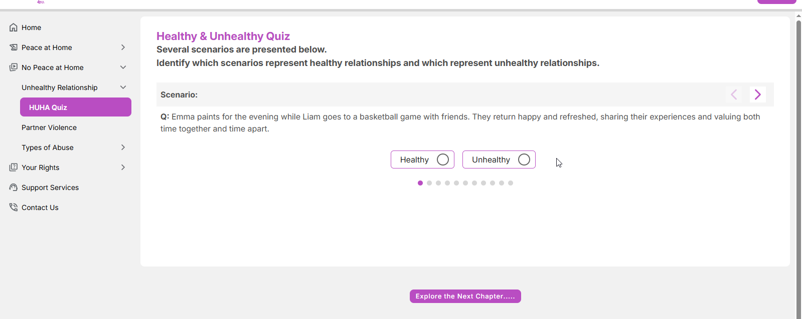
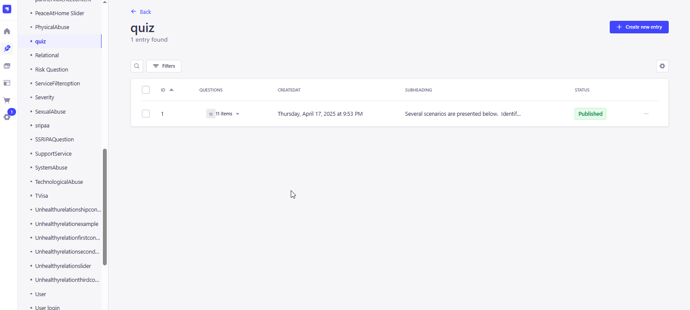
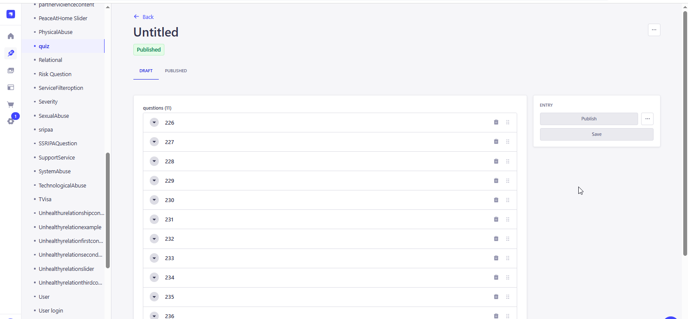
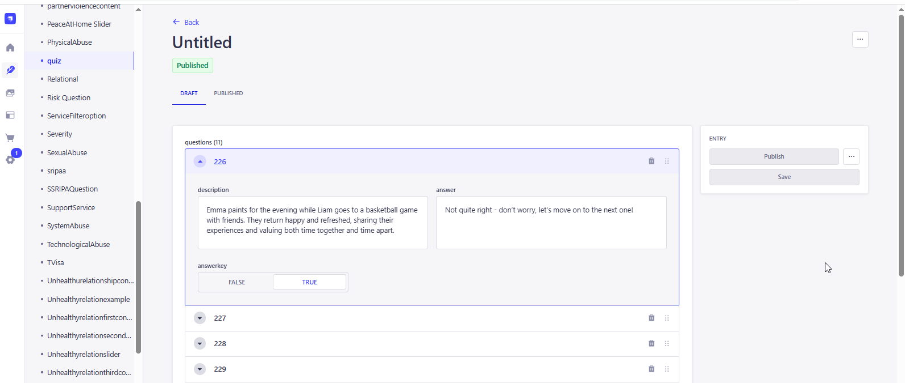

<link rel="stylesheet" href="../css/styles.css">
 
<main>
        <h2>Healthy and Unhealthy Relationship Quiz</h2>
        <p> The Quiz module shows several scenarios given in the Quiz format and the user has to take the test
            to identiy which scenarios represent Healthy and Unhealthy Relationship.
           <br>
           <br>
        1. The user inputs a valid URL to launch the Education Module and the URL is : 
           <a target="_blank" href=https://happy-grass-02e46c50f.6.azurestaticapps.net/quiz>HUHA Quiz</a> <br>
        2. The Quiz page will show the Scenarios in pagination view, the user need to navigate from one question to another question using the pagination icon below the question
           or by using the Forward and Backward arrow for selecting the question and answer it.<br>  
            <br><br>
           The Admin user must access the CMS site in order to add, edit, and update the material on the page..<br><br>
           Go to CMS > Content Manager > Select and open the 'quiz' from the side menu.
           Click and open any state to update the content.<br>  
           For create a new Scenarion, user need to click on the create New Entry button.<br>    
            <br><br>
           The User can open and view all the questions created previously <br>  
            <br><br>
           Also, the user can edit the question that was created previously by selecting any of the question from list <br>
            <br>
           Update the content if required and Click on Publish to make the changes refelects in the application. <br>
        </p>                 
</main>